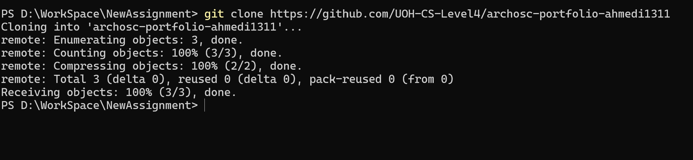
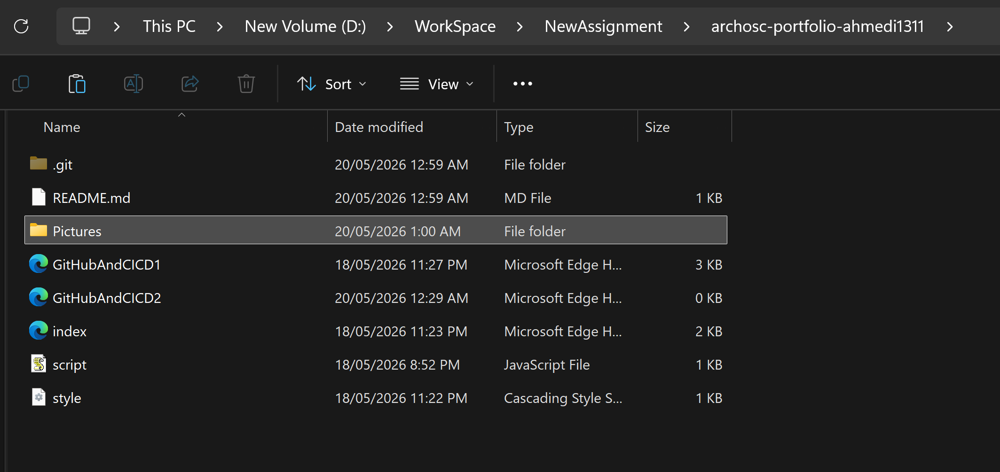
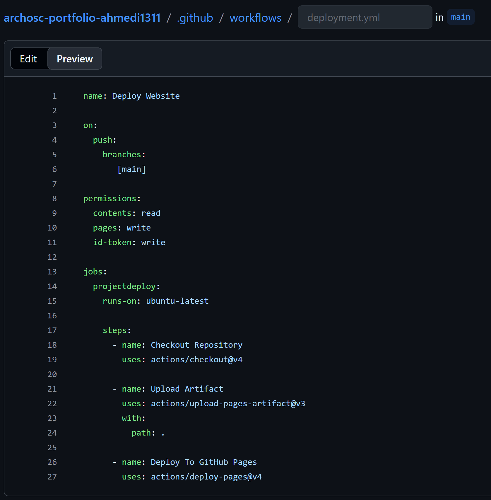
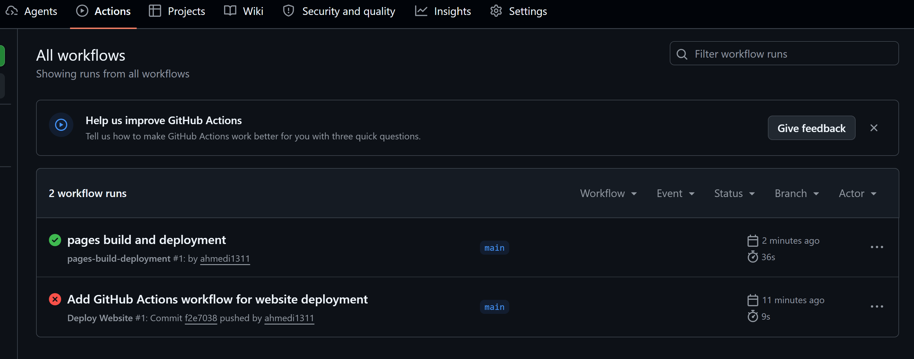

This lab focused on GitHub Actions and YAML workflows. The aim of the lab was to automate deployment using CI/CD pipelines.
I created a new GitHub Classroom repository and copied my previous assignment files into the new repository.

I copied my previous website files including HTML pages, CSS files and screenshots into the new repository.

I created a .github/workflows folder and added a deployment.yml workflow file.

I added YAML instructions to automate deployment using GitHub Actions.

name: Deploy Website
on:
push:
branches:
- main
permissions:
contents: read
pages: write
id-token: write
jobs:
projectdeploy:
runs-on: ubuntu-latest
steps:
- name: Checkout Repository
uses: actions/checkout@v4
- name: Upload Artifact
uses: actions/upload-pages-artifact@v3
with:
path: .
- name: Deploy To GitHub Pages
uses: actions/deploy-pages@v4
I changed the GitHub Pages source to GitHub Actions deployment.

I committed and pushed all files to GitHub using Git commands.

GitHub Actions automatically deployed the website after pushing changes.

The website was successfully deployed online using GitHub Pages.

In this lab I learned how GitHub Actions and YAML workflows can automate deployment tasks. This demonstrated how CI/CD pipelines are used in software development projects.